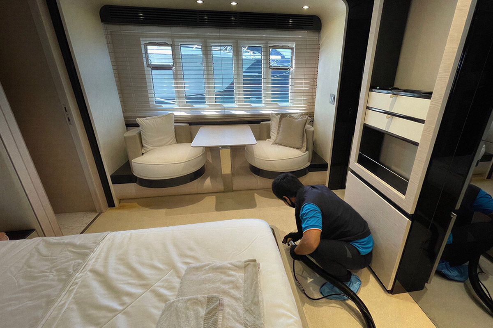

군함 청소
특수 선박 환경에 맞춰 필요한 구역을 안전하게 관리합니다.
특수 선박 환경에 맞춰 필요한 구역을 안전하게 관리합니다. 현장 조건과 오염 상태를 먼저 확인하고 필요한 장비와 공정을 적용합니다.

군함 청소 대상
군함
식당
생활 시설
군함 내부의 식당과 후드, 화장실 등 모든 생활 시설이 청소 대상입니다.
군함 청소 갤러리
작업 전과 후를 확인할 수 있습니다
특수 선박 환경에 맞춰 필요한 구역을 안전하게 관리합니다. 현장 조건과 오염 상태를 먼저 확인하고 필요한 장비와 공정을 적용합니다.

군함
식당
생활 시설
군함 내부의 식당과 후드, 화장실 등 모든 생활 시설이 청소 대상입니다.
작업 전과 후를 확인할 수 있습니다